本章将讲述如何对地图进行优化。一个地图，如果它的优化不好，那么运行起来将导致各种卡顿和问题。创建一个运行起来很卡顿的地图是很容易的，但是反过来让一个地图运行流畅却不是那么容易（类似熵增和熵减的区别）。一个优秀的地图，除了各种优秀的玩法和地图场景等以外，还得能够流畅运行，有优秀的帧率，使玩家的游戏体验更好。这样的地图设计才是优秀的。
6.1 优化与游戏程序#
优化（Optimize），是指采取一定措施使变得更优异。
针对于游戏程序的优化，是为了提高游戏程序的运行效率而采取的措施。其实，无论是游戏，还是其他应用程序，都或多或少地涉及到优化，主要目的都是为了提高应用程序的性能，简化代码，提高效率，减少不必要的运算。
在起源引擎中，游戏优化主要从编程和关卡设计中下手。编程方面通过修改引擎代码等内部内容来实现优化。本书讨论的主要是通过关卡设计来优化游戏性能，即地图优化［Optimization（Level Design）］。
地图优化，范围包括泄露（Leak）、可见性（Visibility）、物理效果（Physics）、材质（Material）、光照（Lighting）、天空盒（Skybox）等方面。其中，地图内必须避免出现泄露，否则一切优化手段都是空谈。
- 1.泄露
在第 50 页上的「泄露」 一节中有讲到。起源1中，必须保证地图内部与地图外部（即虚空）分隔开，地图才能正确编译。否则，很多功能都无法使用，并且可能会导致严重错误。
- 2.可见性
所谓「可见」，是指一个对象能够被另一个对象看到。可见性是地图优化中最重要的部分，可见性基本上决定了整个地图的性能。如果没有可见性，那么地图上的所有东西都会一同被渲染，无论玩家是否看不看得到。很明显，这造成了性能浪费，因为玩家看不到的部分也在渲染。所以可见性是用来决定玩家能看见哪些东西，方便引擎决定要渲染的东西。
- 3.物理效果
物理效果优化是通过减少物理运算来减轻CPU的负担，避免CPU因物理运算而过载。
- 4.材质
材质优化主要是针对于低配置计算机。通过对材质进行一定的设置，你可以让材质在不同的渲染等级下呈现不同的分辨率等，以降低性能要求。
- 5.光照
由于大部分光照是预先计算的，所以针对于光照的优化主要是减少文件体积，但光照优化也包括对动态光源的优化。动态光源是昂贵的，所以需要谨慎使用动态光源。
- 6.天空盒
天空盒的优化主要针对地图中如何摆放天空盒，比如直接一个大盒子包住地图，或者贴着地图边缘一步一步创建天空盒。其中第一种方法是对地图性能最不友好的。天空盒的摆放方式也在一定程度上决定了地图的性能。
起源引擎中有一些实体和工具纹理等，专门用于优化地图性能，比如实体func_areaportal、func_occluder、func_detail等，工具纹理tools/toolshint、tools/toolsskip、tools/toolsareaportal、tools/toolsnodraw等。地图作者主要通过使用这些实体和工具纹理来进行地图优化。
习题14#
- 一、选择题
- 1.以下哪一项是游戏优化的主要目的？ A. 提高图形分辨率 B. 提高运行效率 C. 增加地图复杂度 D. 添加更多动态光源
- 2.在起源引擎的地图优化中，以下哪种方法对性能影响最小？ A. 使用动态光源 B. 使用func_areaportal优化可见性 C. 为地图添加一个大盒子式天空盒 D. 渲染所有不可见对象
- 3.哪种材质优化方法适合低配置计算机？ A. 增加材质分辨率 B. 动态调整材质分辨率 C. 使用高光预计算材质 D. 删除所有材质
- 二、填空题
- 4.地图优化中，如果地图内出现 _______________，很多功能将无法使用，并可能导致严重错误。
- 5.动态光源的使用需要谨慎，因为它是 _______________ 的运算类型。
- 6.光照优化的主要目标是减少文件体积，并对 _______________ 进行优化。
- 三、简答题
- 7.什么是可见性优化？它为什么对地图性能至关重要？
- 8.起源引擎中有哪些工具和实体可以用于优化地图性能？
- 四、论述题
- 9.结合本文内容，论述地图优化的关键性及其主要策略，特别是可见性优化对性能的影响。
6.2 固体与实体（二）#
固体和实体是地图中不可或缺的组成部分。一个地图内，所有的对象都由固体和实体组成，因此搞明白固体和实体的运作方式和限制等对地图优化（可见性）有很大帮助。
6.2.1 固体#
对于固体的优化主要是尽可能降低地图中使用的面数。每个固体会占用一定的面，而单个地图中能够使用的面是有限的。一般我们对固体面使用Nodraw纹理来降低面数。
- 1.特点
与模型相比，固体：
- •独一无二
- •
- •使用预先计算的lightmap光照c
- •刚性（不能变形）
- 2.编译
- 2.
编译地图时，VBSP将接触visleafd的固体面转换为多边形组e。生成的「固体模型」存储在BSP文件中，并且可以由实体（例如世界或你的固体实体）声明。原始固体保留在BSP中，尽管这样做的好处尚不清楚。
对于每个单独的固体模型，编译器只编译接触到visleaf的面。此过程的一些结果如下所示：（图 6-2-1）

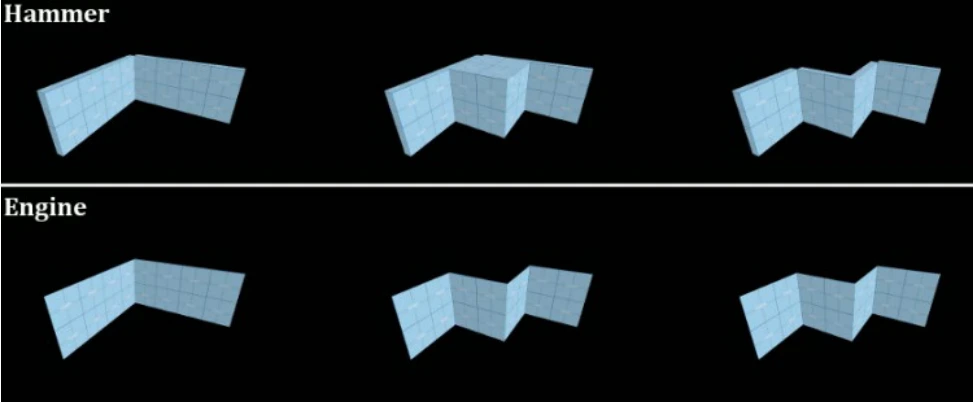
如果固体面的某些部分接触到visleaf而其他部分不接触，则会将面切分（即分割）以去除隐藏区域。
这些规则有两个例外：
• 尽管它们在Hammer中是离散的个体，但func_detaila在编译过程中都会合并为一个。
- •应用了$translucentb的材质的面永远不会被切分。不要将它们应用于内部或隐藏的表面，除非你真的打算这样做。
对于你觉得不想渲染的面，将这个面的材质更换为nodraw纹理c。
- 3.限制
VBSP强制执行以下限制：
- •单个地图中最多存在8192个固体
- •单个固体最大 128 个面
- •单个地图中最多32768（215）个面（BSP 平面限制的一半，每个面使用两个平面）
像 triggers d甚至 hint brush e这样的不可见固体都计入限制。像 NODRAW 这样的面不计入限制。使用 NODRAW 纹理化的面f在编译过程中会被移除，因此仅保留其碰撞、边界和在世界中的位置。请注意，编译器可能会拆分面部，将它们进一步计数到极限。
6.2.2 实体#
对于实体，优化手段一般来说是减少实体的数量，即避免超过实体上限。
- 1.实体限制
出于内存分配的原因，起源引擎可以一次管理的实体数量存在限制，称之为实体限制（Entity Limit）。
一般情况下，单个地图中最多同时存在4096个实体，分为两组，各2048个实体：
- •一组是有实体字典、实体索引的实体；
- •一组是只有实体索引的实体。
不同的起源引擎版本、分支，限制是不一样的，比如在Garry's Mod中限制高达16384个实体。
你还应考虑地图实体数据的组合大小（以字节为单位），即使实体数量在安全限制范围内也是如此。大量实体数据（Entdata）可能需要相当长的时间才能从服务器传输到客户端，并可能导致崩溃。
创建非常大或细节很多的地图时，请记住，运行时存在的实体数将多于编译时的实体数量。角色持有的武器、子弹和死亡布娃娃等物品也是实体。如果你看到「no free edicts」（没有空闲的实体字典）错误，那么你需要开始减少实体数量！
Hammer本身对实体没有数量限制。VBSP则有软限制，并且可以修改。也就是说，你可以编译一个超出引擎限制的地图。（虽然可能没有什么用途）
你可以通过修改（魔改）引擎以允许地图中同时存在更多的实体。
- 2.其他限制
对于不同的实体，有专门的数量限制。比如，一个地图中只允许存在512个info_overlay实体，超出此限制VBSP将拒绝编译地图。
单个地图中最多允许存在4096个静态道具实体，超出的部分仍然可以编译，但在游戏中加载地图时将被忽略。因此，你需要时刻注意到地图中各种资源的使用情况，合理分配地图中可用的资源，减少或避免问题的出现。
- 3.实体字典
在起源引擎编程中，实体字典（edict_t，即Entity Dictionary）是一种接口结构，它允许实体跨越客户端/服务器的界线：附加一个实体，实体的两端都有相同的索引。实体字典还管理实体的DataTable的状态，并在所有DLL中提供通用表示。它不能在客户端上使用。它是有关起源引擎编程的概念。实体字典保证这个实体在客户端和服务端之间是一致的。
- 4.实体索引
在起源引擎编程中，实体索引（Entity Index）是引擎给每个实体的唯一标识符（是一个整型数据）。它允许跨库边界引用同一实体，但除非使用实体字典，否则客户端和服务器上的实体将会有所不同。在客户端和服务器中，指向CBaseEntityc的指针更有用。
单个游戏会话中最多可以同时存在4096个拥有实体索引的实体。前2048个索引是为具有实体字典的实体保留的，这些实体跨越了客户端/服务器的界限。
通过GetEntityIndex()脚本函数可以在脚本中获取到一个实体的实体索引。
习题15#
- 一、选择题
- 1.下列关于固体的说法，错误的是： A. 固体使用预先计算的lightmap光照 B. 单个固体最多允许128个面 C. 应避免将$translucent材质应用于隐藏的固体面 D. 固体实体总是由func_detail组成
- 2.单个地图中能够使用的固体最大数量是： A. 2048 B. 4096 C. 8192 D. 16384
- 3.以下哪种材质应用后，不会被引擎渲染？ A. tools/toolstrigger B. tools/toolsnodraw C. tools/toolshint D. $translucent
- 4.固体优化的主要手段是： A. 降低固体的刚性 B. 提高固体模型的复杂度 C. 尽量减少固体使用的面数 D. 增加固体之间的距离
- 5.编译地图时，哪些固体面会被转换为多边形组？ A. 所有固体面 B. 与visleaf接触的固体面 C. 被工具纹理覆盖的固体面 D. 隐藏的固体面
- 6.下列关于func_detail的描述，正确的是： A. func_detail在编译时会被拆分为多个部分 B. func_detail的每个实例都是独立存在的 C. func_detail在编译时会合并为一个 D. func_detail无法被用于优化地图
- 7.起源引擎中，具有实体字典的实体数量上限是： A. 4096 B. 2048 C. 8192 D. 512
- 8.在地图中，哪些实体不计入实体限制？ A. 静态实体 B. 临时实体 C. 细节道具实体 D. 以上均正确
- 9.触发"no free edicts"错误的原因通常是： A. 编译地图时实体数量不足 B. 地图中静态实体超过上限 C. 同时存在的具有实体字典的实体超过2048个 D. 地图面数超过32768
- 10.下列关于实体索引的说法，正确的是： A. 实体索引的范围与实体字典相同 B. 实体索引是客户端和服务器共享的唯一标识符 C. 玩家使用的实体索引从0开始 D. 实体索引无法通过脚本获取
- 二、填空题
- 11.编译过程中接触______的固体面会被转换为多边形组。
- 12.使用______纹理化的固体面在编译过程中会被移除，仅保留其碰撞和边界信息。
- 13.在地图优化中，可以通过将固体的隐藏面材质更改为______来减少不必要的渲染。
- 14.单个地图中最多允许存在______个静态道具实体。
- 15.起源引擎的实体字典接口结构被称为______。
- 三、简答题
- 16.说明固体和模型在优化和性能需求上的主要区别。
- 17.为什么func_detail实体被用于地图优化？请简述其作用和特点。
- 18.在编译过程中，哪些情况下会导致固体面被切分？
- 19.如果地图中有过多的实体会对游戏性能和体验造成什么影响？请结合实例说明。
- 20.如何合理使用工具纹理（例如Nodraw）以优化地图？
- 四、论述题
- 21.结合实例，论述在地图设计中如何有效利用固体和实体的限制来优化游戏性能。
- 22.请分析实体字典和实体索引在起源引擎中的重要性，并讨论它们在客户端和服务器之间的作用与局限性。
6.3 二叉空间分割#
此部分为非必要内容，但可以帮助你更好地认识地图和了解如何进行可见性优化。起源2已经不再使用BSP，转而使用网格。本篇主要由英文文章翻译而来。关于二叉空间分割的更多信息可自行在在互联网上查找。本文章可从VDC上找到（https://developer.valvesoftware.com/wiki/Binary_space_partitioning）。
6.3.1 什么是BSP#

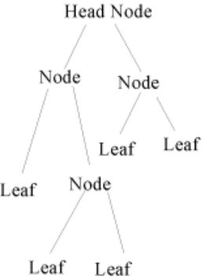
起源引擎（起源2除外）中采用BSP作为地图数据结构。
在计算机科学中，二叉空间分割（英语：Binary space partitioning，简称BSP）是一种通过使用超平面a作为分割，递归细分空间b为两凸集c的算法。这个过程将空间细分转化为了树结构，即所谓的二叉空间分割树（BSP树）。
二叉空间分割算法是在1969年为3D计算机图形所开发，其结构使得场景中的物体包含有额外用于渲染的空间信息，例如可以将物体对象针对观察者位置快速的从前至后进行排序。其他BSP的应用包括：在 CAD中执行几何行动与形状（构造实体几何），机器人技术和3D游戏中的碰撞探测，光线追踪和其他涉及处理复杂的空间场景的情形。
要理解什么是二进制空间分区（Binary Space Partitioning），请将这个词分解为几个部分：分区（Partitioning），即分离（separation）；二进制（Binary），即2（two），如双平面；以及空间（Space），即存在区域。基本上，二叉空间分割意味着将空间分成两边，世界的每一部分都在某个分区或分隔器的一边。
现在大多数游戏引擎都使用BSP树，这是一种简单的二叉树（2-child tree）结构。要理解这意味着什么，必须首先熟悉编程中的树结构。基本上，二子树看起来如图 5-3-1 所示。
现在，这显然与你在游戏时看到的世界一点也不像，但这就是引擎的外观。基本上，头部节点包含整个世界中的所有内容，每个节点依次具有子节点。有些节点没有子节点，这意味着它们被称为「叶子」（Leaf），就像树上的叶子没有树枝一样。
6.3.2 如何表现到3D世界中#

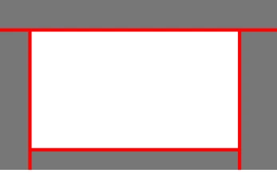
从树中较高节点分支出来的每个节点（和叶子）都被一个平面分隔开，这个平面基本上是世界上一个平面的不可见薄片。一个点在平面的哪一边决定了你在试图找到你的位置时搜索树的方式。
为了更好地解释它，这里将制作一些表示二维世界的图表，使用直线而不是平面。在这些图中，白色表示空白，灰色表示实心空间，红线表示BSP分区。
这是一个简单的4面房间，外面有一个坚实的世界。现在，根据这张图，你可以在世界上有5个不同的地方，所以这些区域就是树状图中的叶子。基本上，在每片叶子中，都没有留下任意线条来分隔你的位置。然而，在BSP的世界里，4个面的房间没什么用，所以让我们添加一些有用的东西：一个块。这就引出了下一节：
6.3.3 CSG是什么意思？#

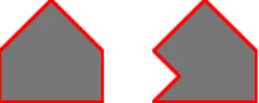

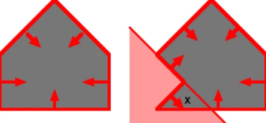
CSG即之前提到的构造立体几何（Constructive Solid Geometry），又称结构实体几何、结构模型。
要再次理解它，最好仔细分析一下这个术语。构造的（Constructive），意思是用来把更复杂、更坚固的东西放在一起；立体（Solid）意思是障碍物（在这种情况下）；以及几何（Geometry），意思是数学定义的形状。基本上，构造实体几何是用于构造较大实体几何体的几何体。还有「CSG运算」，这是一种用于CSG块［通常称为笔刷（Brush）］的数学算法，用于使笔刷与彼此和世界交互。
重要的CSG操作包括合并、减法和切割（BSP树生成过程中使用的一种减法形式）。
在现在的大多数编辑器中，一个基本的CSG单元被称为「笔刷」，用于描述单个凸固体。记住，它必须是凸的。换句话说，带有凹痕的几何图形是不允许的。
为了让引擎找出一个点在哪个叶子中，该叶子必须完全封闭，并由于多种原因，除非固体也是封闭的，否则CSG操作将不起作用，如图 6-3-4 所示。X标记了一个位于其中一个分区后面的位置，这意味着它可以被视为在笔刷之外，即使它实际上在笔刷内部。这就是为什么金源和起源1中不允许凹固体的原因。
因此，让我们看看当一个简单的三角形被添加到示例房间时会发生什么：

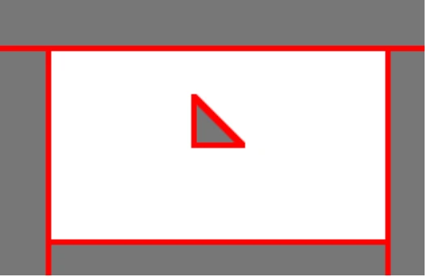

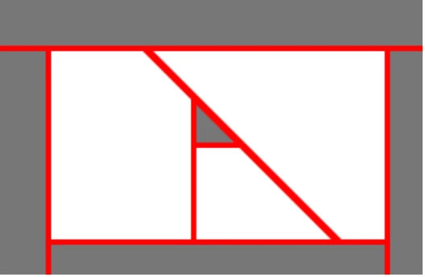
不幸的是，这不能按原样完成，因为需要将空白空间分割开来，只由里面没有其他东西的分区来分割。因此，要做到这一点，需要对空白空间进行CSG减法，沿着添加的笔刷线生成分区。
6.3.4 BSP树是如何生成的？#
基本上，BSP树是通过一次向树中添加一个分区来创建的。为了减少CSG操作中的剪切数量，首先添加轴向分区，如仅在水平或垂直方向上延伸的线，或在三维世界中添加墙、楼板和其他非旋转后的对象（都与坐标轴平行）。每次添加分区时，其中一个叶子都会被拆分为一个节点，并被分区分割，最终创建一个最终确定的树！
下列图表展示了BSP树的生成过程：


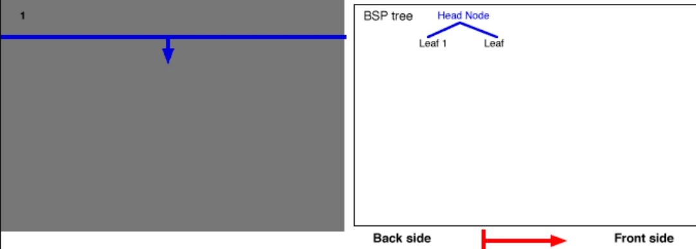

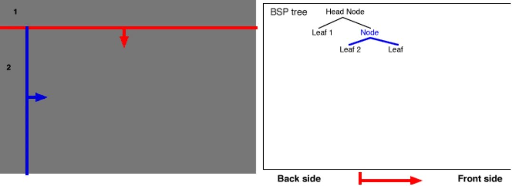

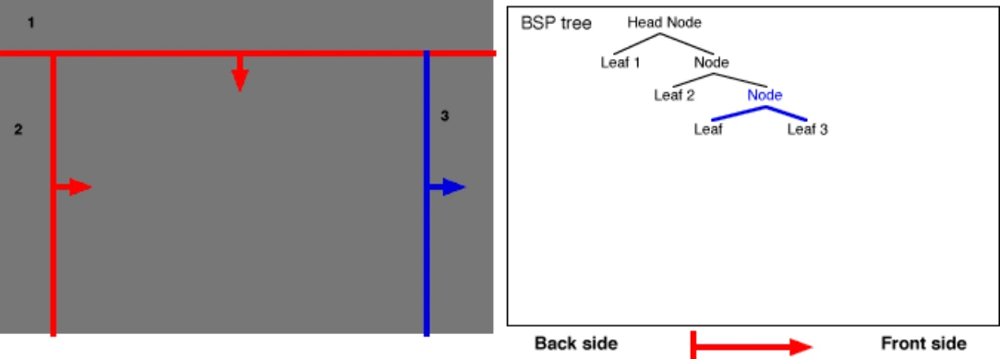

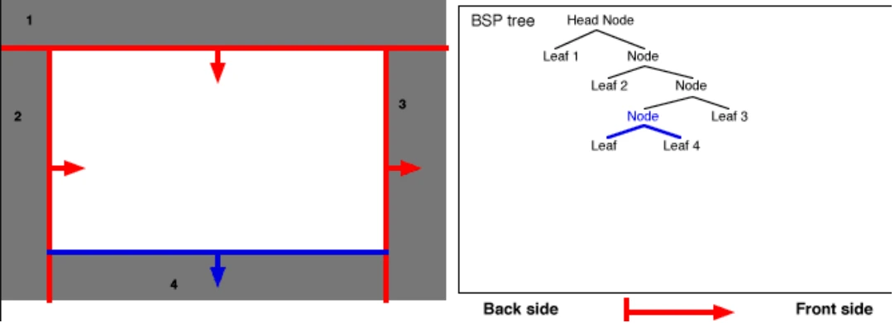

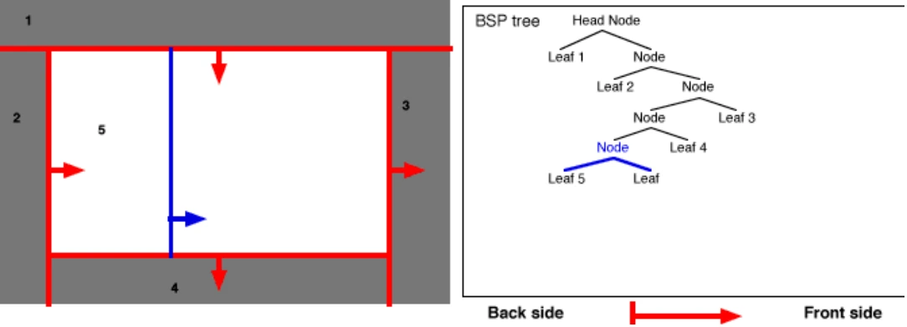

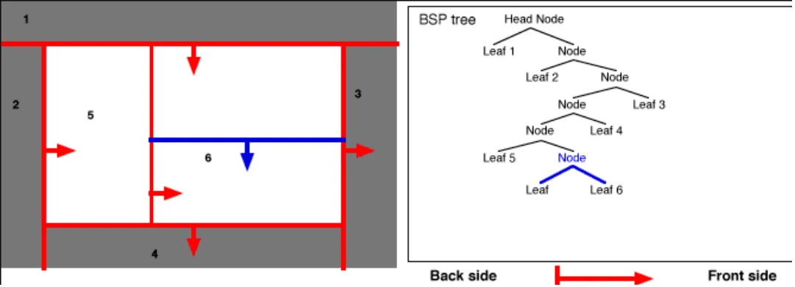

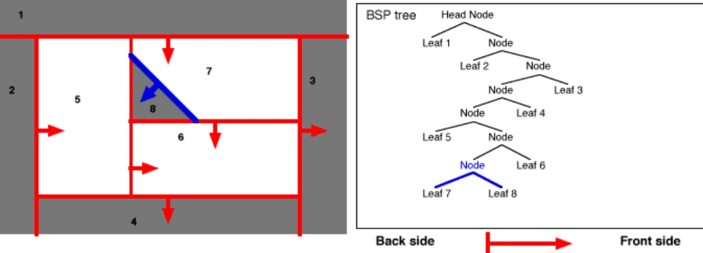

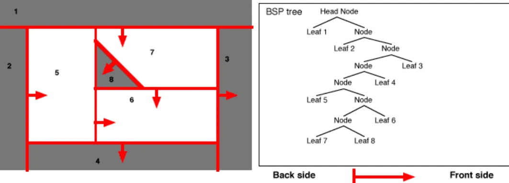
重要的是要认识到，任意叶子都可以拆分为一个节点，而不仅仅是刚刚创建的节点。例如，如果将一个楔形添加到「叶6」中，则「叶6」将成为一个节点并拆分为更多的叶。
6.3.5 如何将BSP树用于碰撞检测？#
碰撞检测的基本类型是线碰撞。线碰撞只是指一条线在世界上被追踪，直到它碰到什么东西，或者到达它的终点。

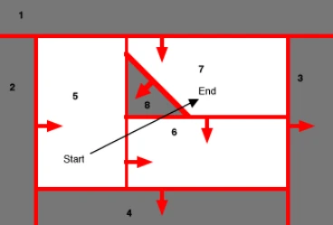
那么BSP树是如何用于此的呢？基本上，通过从起点开始一个接一个地递归检查叶子并移动到终点。如果其中一个实心叶子上有线条，那么它就是hit。如果没有，那就是miss。
让我们看看右侧的图片。在这张照片中，一条线从叶5中的一点到叶7，穿过叶8和6。
因此，以下是确定迹线通过哪个树叶以及按哪个顺序通过的方法：
- 1.开始
将头节点设为当前节点。
- 2.边界检查
如果跟踪线的起点和终点都在当前节点分区的同一侧，那么这意味着它没有穿过分区，因此不可能与一侧的任意部分发生冲突。唯一可能的冲突是可能发生在双方都在的一侧的冲突，因此将当前节点标记为「MISS」，使子节点的起点和终点都在当前节点上，然后重新开始步骤2。
如果起点和终点位于分区的不同一侧，则意味着它穿过了节点分区，因此可能与某个东西发生了碰撞。这需要进行检查，因此转到步骤3。
- 3.分割检查
只有当跟踪线被节点分区分割时，才能到达步骤3。由于我们只需要轨迹命中的第一个实体对象（或叶），因此应该首先检查起点所在的一侧。所以，沿着起点所在一侧的树往下走，然后执行第4步。如果那一边是畅通的，那么沿着树的端点所在的那一边往下走，在那里执行第4步。如果双方都在步骤4中检测到，但都没有命中任意内容，则跟踪在当前节点中没有命中任意对象。将其标记为「MISS」，然后从当前节点返回树。如果你不能再返回到树，那么追踪就完成了：要么命中（hit），要么未命中（miss）。
- 4.递归或内容检查
现在，正在检查一个分区的一侧，看看线是否在那里。
如果被检查的一侧是一个叶，那么这意味着分割检查的一侧已经完成：如果该叶为空，那么跟踪没有到达当前被检查的分区的一侧，在这种情况下，将该叶标记为「MISS」，返回树，然后返回步骤3。如果叶是实心的，它就会命中，所以将叶标记为「hit」，并将上面的节点也标记为「hit」，然后返回树。
如果要检查的节点不是叶，则必须以与第一个节点（头节点）相同的方式对其进行检查。因此，将要检查的节点设为当前节点，然后转到步骤2。
对于任意不是程序员的人来说，这可能有点令人困惑。对于任意人来说，这里有一个伪程序来确定它：
- 1checknode (currentnode)
- 2if(currentnode is a leaf)
- 3if(currentnode contents are solid)
- 4return HIT
- 5else
- 6return MISS
- 1if(side start is on = side end is on)
- 2return checknode (child of currentnode both sides are on)
- 3result1 = checknode (child of currentnode start is on)
- 4result2 = checknode (child of currentnode end is on)
- 1if(result1 does not equal result2)
- 2nodehit = currentnode
- 3if(result1 = HIT or result2 = HIT)
- 4return HIT
- 5else
- 6return MISS
由于线的角度可以用于偏转之类的东西，我如何确定线击中了哪个分区？
——基本上，树上一方至少命中一次而另一方都未命中的最高节点是命中所在分区的节点！
6.3.6 BSP树如何用于排序渲染？#
由于只有叶子应该画出它们的一部分，你总是可以通过递归树来找到离玩家最远的叶子，而不是选择玩家所在的一侧，而是选择它们不在的一侧。这不会给你一片叶子之间有最大的空间，但会给你一个叶子和玩家之间有最大叶子的叶子！渲染完一片叶子后，只需向上走一步，向下走另一个子树，然后重新开始，直到渲染完整棵树！
- 1.剪裁外壳
我们已经展示了BSP树如何用于线条跟踪，但这些树只对模拟子弹之类的微小对象有用。对于较大的对象，有许多方法可以进行碰撞，其中第一种方法是使用剪裁外壳（Clipping Hull）。基本上，剪裁外壳背后的想法是通过创建一个墙凹陷的单独BSP树，对大对象和小对象进行碰撞检查。在基于固体的环境中，只需向外推每个固体的分区，然后重建BSP，然后通过新的「外壳」跟踪对象的中心，就可以轻松实现这一点。

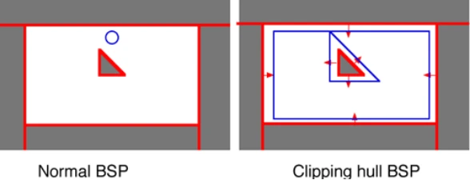
不过，你可能会注意到这方面的一个问题：即使墙都被移到了相同的距离，如果玩家走到地图的顶部，他就再也无法越过这个街区。这就引出了下一个问题：
- 2.轴向平面
轴向平面是为了防止出现上述堵塞（blockage）而添加的分隔板（partitions）。为了使问题更加明显，请看以下示例：
正如您所看到的，墙和楔之间的间隙大致相同，这意味着剪裁外壳的顶部和底部都应该有间隙，但没有。尽管墙被推出了同样的距离，但顶部边缘更尖锐，这使它推出得更远。有几种方法可以解决这个问题，但最简单的方法是添加轴向平面，在二维世界中，轴向平面仅为水平和垂直平面，而在三维世界中，这些平面是非角度平面，如墙和天花板。
以下是将轴向平面添加到笔刷时发生的情况：

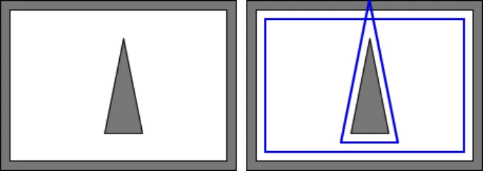
正如您所看到的，墙和楔之间的间隙大致相同，这意味着剪裁外壳的顶部和底部都应该有间隙，但没有。尽管墙被推出了同样的距离，但顶部边缘更尖锐，这使它推出得更远。有几种方法可以解决这个问题，但最简单的方法是添加轴向平面，在二维世界中，轴向平面仅为水平和垂直平面，而在三维世界中，这些平面是非角度平面，如墙和天花板。
以下是将轴向平面添加到笔刷时发生的情况：

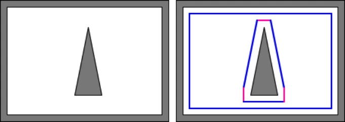
正如你所看到的，现在顶部和底部都有一个缺口，所以球员可以安全地穿过楔形的两侧。
- 3.可见性的确定（对于基于雷神之锤Quake的引擎）
尽管这需要很长时间，但确定可见性的方法实际上非常简单。
以下面这个半复杂的BSP为例：

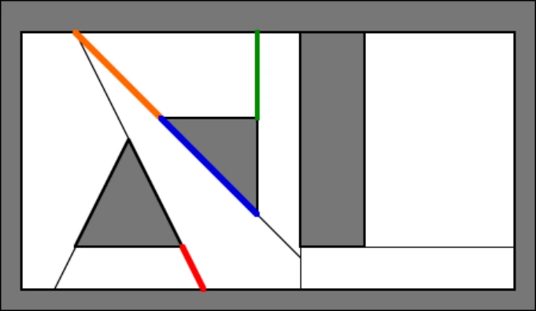
在所有基于Quake的引擎的BSP过程中所做的事情之一是Portal化（Portalization）。在该过程中，每片叶子的每一个分离都会转化为一个Portal。不透明的Portal，如某些引擎的壁面和水，被视为不透明Portal。其他的仅用于从树叶的边界区域确定可见性。
Quake的可见性处理方式是尝试为每对Portal创建一个「分离平面」，这基本上是一张纸或一条线，将两个Portal放在一边，第三个Portal放另一边。如果可以做到这一点，那么单独保留的Portal就被认为不会成为障碍。然而，如果发生这种情况，则会考虑该Portal，这意味着这两个Portal无法看到彼此。
以下是如果红色Portal与绿色Portal进行VIS，将会发生的大致情况：

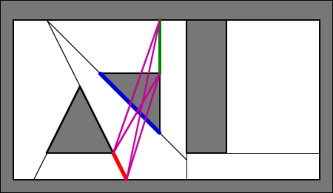
正如您从品红色线中看到的那样，无法绘制将蓝色Portal与绿色Portal分隔开的线，因此会考虑使用蓝色Portal。
然而，当橙色Portal与红色Portal相对时，情况就不同了：

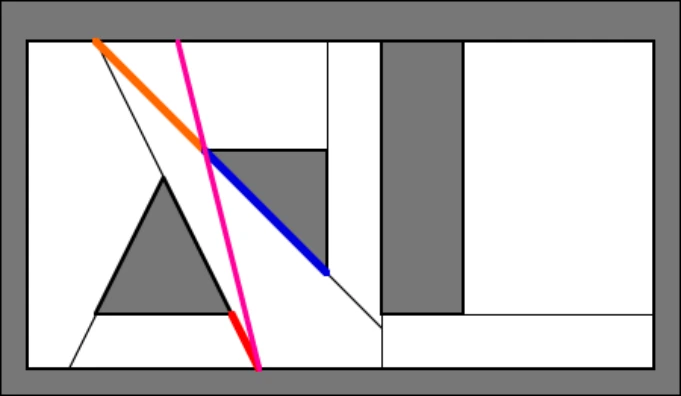
所示的品红色线完全夹住蓝色Portal，同时将红色和橙色Portal留在另一侧。这意味着蓝色的Portal不在路上，如果没有Portal在路上，那么红色和橙色的Portal可以互相看到。
- 4.细节笔刷
细节笔刷（Detail Brushes）是在Quake II中引入的东西，在许多其他引擎中都可以发现。它们也已在Quake 1和金源的现代编译器中实现。当BSP实用程序（英文：BSP Utility）导出Portal列表时，细节笔刷基本上不包括在Portal列表中，这意味着它们在可见性过程中不可能成为阻碍。然而，为了使其真正有效，需要一个「集群」可见性系统。在集群系统中，可见性数据不是告诉引擎哪些叶子可以互相看到，而是「告诉」引擎哪些叶子集可以互相看到。这些集合基本上是通过为非细节笔刷创建一个BSP树，将叶数转换为簇数，对细节笔刷进行CSG操作，然后确定细节笔刷占据哪些叶来确定的。细节笔刷也不切割Portal，而且由于Portal用于生成面，所以它们也不切割世界多边形。
简单地说，细节笔刷就是不会对可见性产生影响的固体。我们在3.7中应用了细节笔刷，它是func_detail。
6.4 可见性（二）#
如果没有可见性，无论玩家是否能看到，地图上的所有东西都会一直绘制。显然，必须要确定渲染的对象列表，但要怎么才能确定？测试每个对象或曲面是否真的能被看到的时间要比最初渲染它们的时间长得多！
因此，可见性用于预先测试每个对象之间是否能互相看到，这样引擎便能立刻知道哪些对象能互相看到哪些对象，以及需要渲染（绘制）哪些对象。
可见性工作由编译程序VVIS（vvis.exe）完成。VVIS，全称为「Valve Visible Information Set」，是一个命令行程序，通过确定哪些可见性分支区域能看到哪些其他的可见性分支区域，哪些不能，并将可见性数据嵌入到地图中。
6.4.1 潜在可见集#
潜在可见集（Potentially Visible Set，简称PVS）是一组从给定位置可能被看见的可见性分支区域的集合。它为许多运行时测试提供了基础，包括网络过滤和渲染控制。说的通俗一点，就是站在一个点，你所能看到的全部可见性分支区域所组成的集合就是潜在可见集。
PVS会根据你所在的位置实时更新。引擎根据PVS来控制要绘制的内容。
PVS已经事先由VVIS确定好了，所以引擎能快速知晓哪些部分是需要绘制的。
如果地图不经过VIS编译过程，那么PVS系统将无法正常工作。
以下是一些相关的控制台命令：
r_novis 0/1：控制PVS系统的开关。关闭PVS系统后，整个地图都会被渲染。
r_lockpvs 0/1：如果开启，PVS系统将不会实时更新。
6.4.2 可见性分支区域#
可见性分支区域（Visleaf），又称「可见叶」「叶子」「蓝线」a，是地图中的一个空心体积，它定义了可见表面的「组」。地图中的每个可见的表面都是可见性分支区域的一部分。它们主要由渲染引擎用于确定（在渲染每一帧之前）可能需要在屏幕上渲染地图的哪些区域。当从当前可见性分支区域的任意部分都可以看到其他可见性分支区域的任意部分时，引擎将考虑渲染该可见性分支区域的全部内容。
可见性分支区域是由VVIS编译工具从BSP树自动生成的。可见性分支区域的每个（内部）表面要么是世界固体的表面，要么是相邻可见性分支区域之间的通道。也就是说，BSP树的形状决定了可见性分支区域的形状，并且它一定是凸的。
- 1.工作原理
下面我们来看看可见性分支区域是如何优化性能的。
BSP地图的内部空间（即通过世界固体与虚空分离的空间）将会被分割为可见性分支区域。

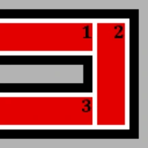
如右图所示，在U形走廊中，空间被分割成了3个可见性分支区域（为了清晰起见，在它们之间添加了间隙）。区域1和3之间没有视线，因此当相机（指玩家的视角）在其中一个可见性分支区域中时，就不会绘制另一个可见性分支区域的内容。对于引擎来说，计算这一点就像浏览地图的嵌入式可见性图表一样简单。
但是，区域2是一个问题。当相机在可见性分支区域2中时，区域1和区域3都会渲染，因为区域2可以同时看到区域1和区域3，此时所有的3个可见性分支区域都被引擎渲染了。
我们可以使用一些工具来解决这个问题。但请记住，很多时候修复这种问题比简单地绘制这些不太理想的场景要更昂贵。
- 2.分割（生成）
在地图没有泄露的情况下，地图中会生成可见性分支区域。可见性分支区域是如何像图 6-4-1那样分割的呢？这主要取决于BSP树是怎么生成的。第 124 页上的「6.3 二叉空间分割」 解释了BSP树如何生成，通常可见性分支区域的形状与BSP树所生成的「叶子」相同。
- 3.查看可见性分支区域
在Hammer中，通过Map选项卡中的「Load PortalFile」可以加载.prt文件，可见性分支区域将以蓝线显示。通过点击其下方的「Unload PortalFile」可以取消显示可见性分支区域。
在游戏中，通过mat_leafvis控制台变量可以显示可见性分支区域：
mat_leafvis 0：不显示可见性分支区域；
mat_leafvis 1：显示当前玩家所在的可见性分支区域，以红线框显示；
mat_leafvis 2：显示当前的PVS。
mat_leafvis 3：显示所有的可见性分支区域。
请注意，这是作弊指令。
6.4.3 其他影响可见性的内容#
- 1.Areaportal
Areaportal是一种使用纹理tools/toolsareaportal的固体实体。它在两个封闭的可见性分支区域集之间充当「大门」，控制彼此是否能够互相「看到」对方。即它可以阻断两个封闭的可见性分支区域集之间的可见性，并使得另一个可见性分支区域集从渲染中被完全剔除。有关详细信息，请参阅第 138 页上的「6.5.3 Areaportal」。
- 2.Hint固体
Hint固体是一种使用了工具纹理tools/toolshint的普通固体。它指示编译器沿着使用了hint纹理的固体表面所在的平面切割可见性分支区域。一般地，Hint固体有一个固体面使用hint纹理，用于切割可见性分支区域，而其他不需要切割可见性分支区域的面使用纹理tools/toolsskip。
6.5 可见性的优化#
显然易见，可见性对于地图的性能而言是举足轻重的。因此，我们需要对可见性进行优化，以让可见性能够最大程度的发挥它的作用。
我们主要从以下几个方面进行优化。
6.5.1 可见性分支区域#
我们需要做的就是让可见性分支区域简单化，即保留必要的、主干的可见性分支区域，去除无关紧要的可见性分支区域。
然而我们无法对可见性分支区域进行直接的编辑操作。基本上，对可见性分支区域的优化其实就是减少那些影响可见性分支区域分割的不必要因素。
影响可见性分支区域分割的因素主要包括：
- 1.普通固体
- 2.网格分割
- 3.部分特殊实体（例如func_areaportal、func_visculster）
- 4.使用工具纹理的固体
可见性分支区域会沿xy平面每 1024 个单位分割一次，以便分解大面积区域。在Hammer 的网格中会突出显示分割线。这就是网格分割。要减少网格分割所造成的不合理可见性分支区域分割，则需要地图整体对齐到网格。具体的做法一般为：先全部选择地图中所有的对象，把网格尺寸调到最大（512单位），然后通过鼠标或方向键移动整个地图，或是按下Ctrl+B，这样地图就会对齐到网格上。
其次，要规范的就是固体。
主要与小固体有关。如果小固体还是普通固体，那么它们可以参与可见性分支区域的分割。而很多时候小固体所分割出来的可见性分支区域都是多余的，相当于它们参与分割对最终的地图性能几乎没什么影响，反而会增加编译工作量，消耗无用的CPU，甚至产生负作用。对于小固体，优化的方法比较简单，把它们全部转为细节固体即可，即func_detail，或者其他的固体实体，或者转为模型。
尤其是那些不对齐到网格的普通固体。其次是由固体构成的非矩体，包括各种球体、棱柱、棱锥，或者更加不规则的形状。对于这些非矩体固体，一般都需要将它们转换为细节固体。起源引擎擅长处理那些平直的图形，所以其他的形状尽量不要用固体实现。
总之，固体在很大程度上直接决定了可见性分支区域所能发挥出的作用。合理地把部分固体转为固体实体能够使地图性能更好。如果直接把固体都转为固体实体，这样可见性分支区域固然简单了许多，但是可见性分支区域就失去意义了，因为起不到优化的效果。
我们一般把不挡视野的固体转为细节固体，而其他能够挡视野的固体就不转为实体。
什么叫「挡视野」？一般而言，挡视野是指一个物体能够遮盖住其他很多物体的这一特点。比方说，你面前有一个很大的墙，你几乎看不到墙后面有什么东西，这就是「挡视野」，因此这个固体不应转为实体。反之，如果只是由一堆小固体组成的一些对象，比如台阶，它们遮不住什么东西，因此需要转为固体实体。
把固体转为实体和是否仍然保留为普通固体需要在实践中才能切身领会到其中的真谛。你做过的地图多了，你自然而然就能够懂得哪些固体需要变为固体实体，哪些不需要。本书只是简单解释了什么情况下需要转为固体实体，什么情况下不需要，而在实际上需要灵活变化。这就是考验你对可见性分支区域的理解了。
只有充分理解了什么是可见性、什么是可见性分支区域、起源引擎如何利用可见性进行性能优化，你才能够真正知道普通固体是否需要转为固体实体。不必刻意去学习、去理解，你会在制作地图的过程中逐渐理解，这是一个循序渐进的过程。
诸如func_areaportal、func_viscluster之类实体，或使用诸如tools/toolshint之类的工具纹理的固体，等等，是我们人工干预可见性的一些手段。合理利用它们，能够让可见性更好。
6.5.2 减少VVIS的编译时间#
VVIS是计算可见性分支区域之间可见性的工具（而VBSP则创建这些可见性分支区域）。即使是在最复杂的地图上，它也不应该花费超过几分钟的时间来完成工作，如果确实如此，有可能需要执行以下一些操作。即使没有问题，这些也是很好的实践！
- 1.适当使用细节固体。
- 2.尽量将世界固体对齐到网格上。尺寸取以二的幂次方为好。
- 3.使用简单的世界固体，尽量避免通过其他工具（如雕刻工具或顶点编辑操作）过度操作。
- 4.在大面积具有连续可见性的区域放置func_viscluster（在所有游戏中都适用）。其中的可见性分支区域将被假定能够相互看见。
- 5.如果合理的话，避免创建玩家不会看到或与之交互的大型开放区域。使用3D Skybox来减小天空的大小，并在地形下方创建世界固体的框架。
记住，VIS编译时间和游戏性能是两回事。如果缩短编译时间会影响结果，可能值得耐心等待较长的编译时间。
6.5.3 Areaportal#

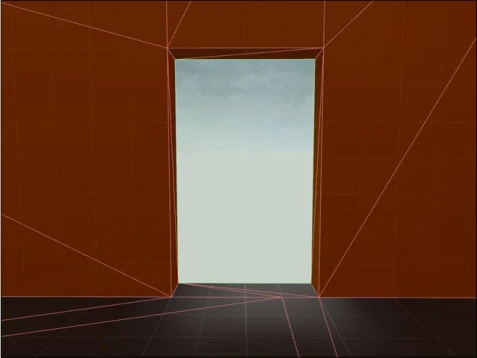

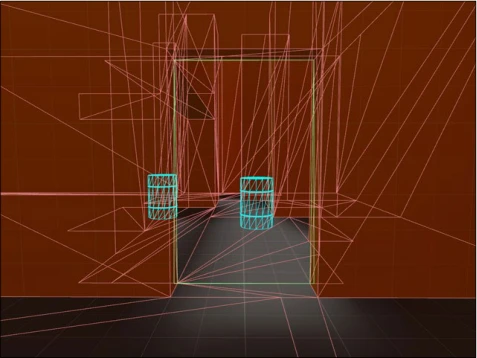
Areaportal是一个使用工具纹理tools/toolsareaportal的固体实体。其类名通常是func_areaportal、func_areaportalwindow，用于封闭两个单独的可见性分支区域集，以及控制可见性。
Areaportal 有两个不同的目的：剔除几何体并从渲染中移除整个它所封闭的可见性分支区域集。
Areaportal 就像是打开或关闭的门。当Areaportal关闭时，它会让在其后面的所有几何体都不渲染（即都被引擎认为是「看不到的」）。当它打开时，里面的几何体又能够再次被看见了。Areaportal可以在引擎运行时动态打开和关闭。地图作者们通过使用实体 I/O 系统或通过与门实体的链接，或从一系列的trigger_multiple实体，等等，来打开和关闭Areaportal。
- 1.注意事项
一个Areaportal具备以下条件：
- •绑定到了func_areaportal实体上。
- •必须仅由一个固体构成。绑定了多个固体的 Areaportal 实体在 vbsp 编译时会产生错误。
- •必须使用应用于 Areaportal 固体的所有面的tools\toolsareaportal纹理。
- •不能包含地形（displacement），如果包含会产生 vbsp 错误。
- •必须用于密封它们连接的所有区域，以避免泄露。
- •是有体积的，而不是单个表面。尽管 Areaportal 可以是任意大小，但通常它们由与它们连接的区域（门口）大小相同的细节笔刷构成。
- •在 Areaportal 体积的大小生成一个新的可见性分支区域。
- •可以根据输入与输出或通过将它们附加到门实体来设置打开或关闭。
……（正在编写）
原书脚注
- 原书第 120 页 a低细节：就是细节的内容少，低即少。细节越多，就越消耗性能（越卡）；反之就越流畅。
- 原书第 120 页 b即「Cheap」。这里的「便宜」指的是对性能要求小。反之，越「昂贵」（Expensive），对性能的要求越高。
- 原书第 120 页 c即使用预先计算的光照贴图。这样，游戏就不需要实时渲染光照，从而使游戏流畅。
- 原书第 120 页 d可见性分支区域。在后面的文章中将会讲到。它是地图优化的一部分。
- 原书第 120 页 e通过使用构造立体几何法（Constructive Solid Geometry）转换。
- 原书第 121 页 a一种固体实体。它用于防止固体切割可见性分支区域。（不能封闭地图）
- 原书第 121 页 b一种材质着色器参数（Material Shader Parameter）。它指定材质应部分透明，材质的Alpha通道决定了材质的半透明度，并且这些材质不会阻挡Bot的视线。
- 原书第 121 页 c指纹理「tools/toolsnodraw」。应用了该纹理的面将不会被引擎渲染，顾名思义。
- 原书第 121 页 d指应用了纹理「tools/toolstrigger」的固体实体（通常是以「trigger_」为前缀的固体实体需要使用该纹理）。
- 原书第 121 页 e一种应用了纹理「tools/toolshint」的普通固体。visleaf将被应用了该材质的固体面切割。
- 原书第 121 页 f指一个面的纹理是「tools/toolsnodraw」。想要查看这些工具纹理，只需要在纹理浏览器中的「filter」输入「tools」。
- 原书第 122 页 a例如「prop_static」等实体。
- 原书第 122 页 b例如「prop_detail」、「func_detail」等实体。
- 原书第 122 页 cCBaseEntity：在起源引擎编程中，CBaseEntity是所有实体基于的类，起源引擎中的所有实体都基于CBaseEntity构建。
- 原书第 122 页 dmaxplayer是一个控制台变量，定义了单个游戏对话的最大玩家数，即单个游戏对话中最多可以有多少个玩家。
- 原书第 124 页 a在数学中，超平面（Hyperplane）是n维欧氏空间中，余维度为1的子空间。即超平面是n维空间中的（n-1）维的子空间。它是平面中的直线、空间中的平面之推广。
- 原书第 124 页 b指欧几里得空间。
- 原书第 124 页 c在点集拓扑学与欧几里得空间中，凸集（Convex set）是一个点集合，其中每两点之间的线段点都落在该点集合中。例如，区间是实数的凸集。
- 原书第 133 页 a称可见性分支区域为蓝线，是因为可见性分支区域在Hammer中加载时以蓝色线框显示。
- 原书第 136 页 a 所谓规范作图，一般指制作地图时遵循一定的规则来制作地图，使得地图条理有序，以便于制作地图。例如在地图中规定每个墙的厚度一般为16单位，高为128单位（场景须按照度量标准进行制作）；地图中的所有普通固体都必须严格对齐到网格；地图中的对象命名都采取一定的命名格式；对地图中各类对象进行分类分组；等等。